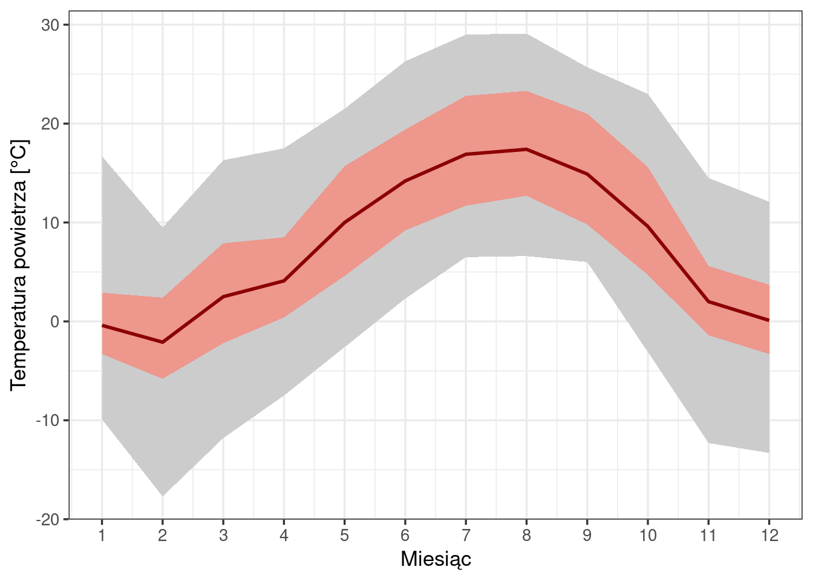
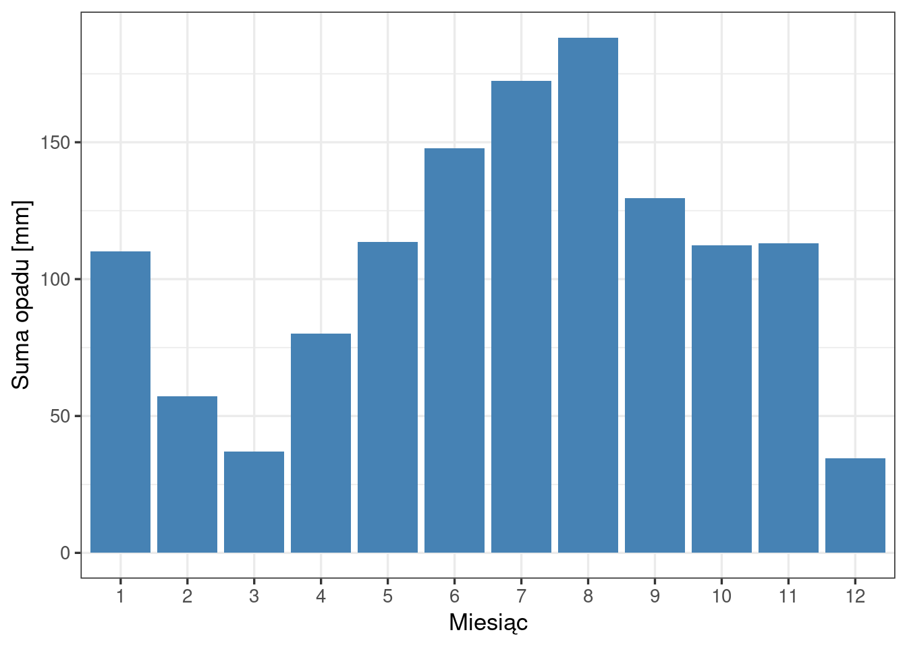
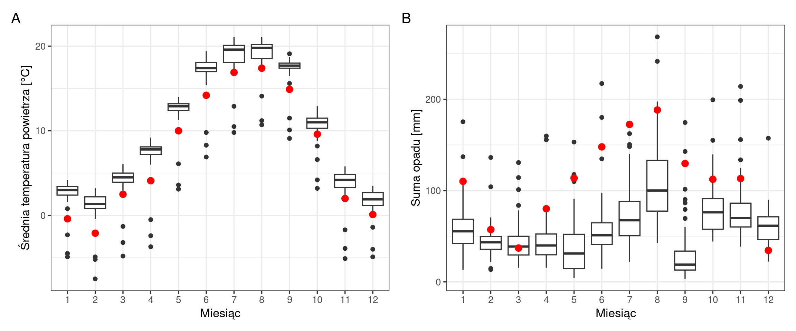
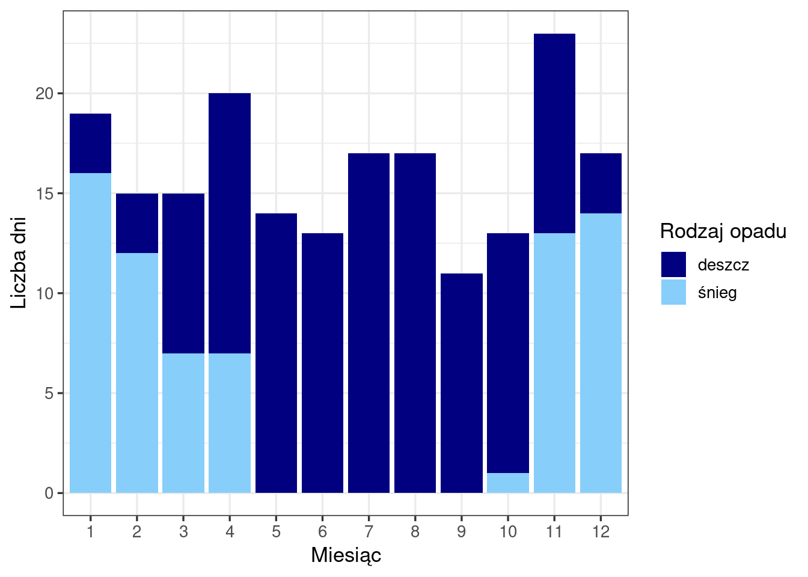
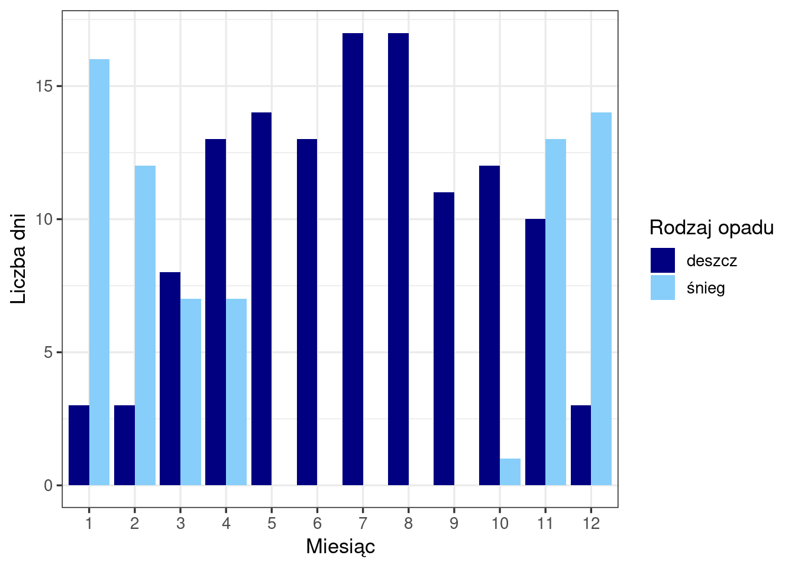
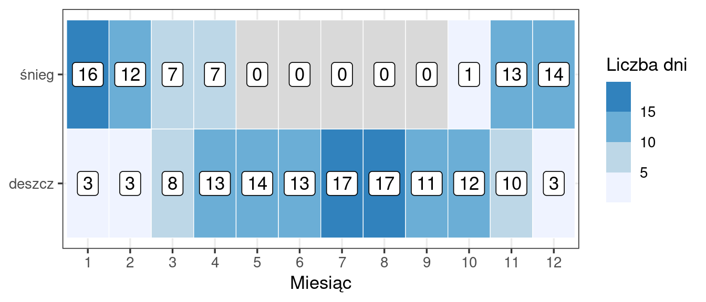

Rozdział ma postać raportu (Wprowadzenie – Literatura), po którym następują sekcje dydaktyczne: Wybór sposobu prezentacji wyników (Sekcja 24.7) przedstawia te same wyniki na innych typach wykresów, Obliczenia w R (Sekcja 24.8) wyjaśniają kod wszystkich sekcji, a na końcu znajdują się zadania. Kod R jest w raporcie domyślnie ukryty — rozwija się go przyciskiem Kod nad wynikiem. Stację i rok wybiera się w jednym miejscu kodu, dlatego ten sam raport można wykonać dla innej stacji synoptycznej i innego roku.
24.1 Wprowadzenie
Raport opisuje warunki meteorologiczne na jednej stacji synoptycznej — w Zakopanem — w 2023 roku: przebieg temperatury powietrza i opadu atmosferycznego w ciągu roku, liczbę dni z deszczem i ze śniegiem oraz położenie wartości ze stacji na tle całej sieci stacji synoptycznych. Dane są pobierane bezpośrednio ze zbioru IMGW-PIB za pomocą pakietu climate i przygotowywane do wizualizacji w kodzie raportu.
Raport odpowiada na pytania badawcze:
Jak zmieniała się temperatura powietrza w ciągu 2023 roku — w ujęciu wartości średnich i ekstremalnych? (Sekcja 24.4.1)
Jak zmieniały się miesięczne sumy opadu? (Sekcja 24.4.2)
Jak temperatura i opad na stacji kształtowały się na tle 59 stacji synoptycznych? (Sekcja 24.4.3)
W których miesiącach występowały dni z deszczem i dni ze śniegiem? (Sekcja 24.4.4)
24.2 Dane
Raport wykorzystuje miesięczne wartości charakterystyk meteorologicznych ze stacji synoptycznych w 2023 roku, udostępniane w publicznym zbiorze danych Instytutu Meteorologii i Gospodarki Wodnej – Państwowego Instytutu Badawczego (IMGW-PIB, https://danepubliczne.imgw.pl). Dane pobiera z tego zbioru pakiet climate (Czernecki, Głogowski i Nowosad, 2020). Jednostką obserwacji jest stacja w danym miesiącu — dla 2023 roku zbiór obejmuje 59 stacji i liczy 707 obserwacji: 58 stacji ma po 12 obserwacji, a stacja Resko-Smólsko — 11 (brak lutego).
Warunki korzystania z danych określa regulamin udostępniania danych IMGW-PIB, który wymaga wskazania źródła danych, a w przypadku ich przetworzenia — także informacji o przetworzeniu: Źródłem pochodzenia danych jest Instytut Meteorologii i Gospodarki Wodnej – Państwowy Instytut Badawczy. Dane Instytutu Meteorologii i Gospodarki Wodnej – Państwowego Instytutu Badawczego zostały przetworzone.
24.2.1 Pobranie danych
Stację i rok określają dwa obiekty na początku kodu. Funkcja meteo_imgw_monthly() pobiera dane wszystkich stacji synoptycznych z wybranego roku: są one potrzebne do porównania z siecią stacji (Sekcja 24.4.3), a wybraną stację wskazuje się w dalszym kroku (Sekcja 24.2.3). Pobranie danych wymaga połączenia z internetem.
Kod
# pakiety: tidyverse (przetwarzanie danych i wykresy), climate (pobieranie danych IMGW-PIB)library(tidyverse)library(climate)# wybrana stacja (nazwa zapisana wielkimi literami) i rokwybrana_stacja <-"ZAKOPANE"wybrany_rok <-2023# dane miesięczne wszystkich stacji synoptycznych z wybranego roku;# status = TRUE pozostawia kolumny ze statusem pomiarumeteo_imgw <-meteo_imgw_monthly(rank ="synop", year = wybrany_rok, status =TRUE)
Tabela meteo_imgw zawiera dla 2023 roku 707 wierszy i 78 kolumn. Nazwy kolumn pochodzą ze zbioru IMGW-PIB, np. POST, MC, TMAX; kolumny statusu pomiaru mają nazwy z przedrostkiem W, np. WTMAX.
24.2.2 Przygotowanie danych
Przygotowanie danych do wizualizacji obejmuje zastąpienie wartości oznaczających brak pomiaru brakiem danych (NA) i wybór kolumn. W raporcie wykorzystano kolumny:
Kolumna
Znaczenie
POST
nazwa stacji
MC
miesiąc (1–12)
TMAX, TMIN
absolutna maksymalna i absolutna minimalna temperatura powietrza [°C]
TMXS, TMNS
średnia maksymalna i średnia minimalna temperatura powietrza [°C]
STM
średnia miesięczna temperatura powietrza [°C]
SUMM
miesięczna suma opadu [mm]
DESD, SNID
liczba dni z opadem deszczu i z opadem śniegu
Charakterystyki temperatury powietrza. Zbiór zawiera pięć charakterystyk temperatury, które opisują miesiąc w różny sposób (nazwy według opisu danych IMGW-PIB):
absolutna maksymalna i absolutna minimalna temperatura (TMAX, TMIN) — najwyższa i najniższa temperatura zanotowana w ciągu miesiąca. Każda z nich jest jedną wartością skrajną, która wystąpiła w jednym dniu miesiąca;
średnia maksymalna i średnia minimalna temperatura (TMXS, TMNS) — średnia z temperatur maksymalnych i średnia z temperatur minimalnych poszczególnych dób miesiąca. Opisują przeciętną najwyższą i przeciętną najniższą temperaturę w ciągu doby w danym miesiącu;
średnia miesięczna temperatura (STM) — przeciętna temperatura powietrza w miesiącu.
Wartości są uporządkowane: absolutna minimalna ≤ średnia minimalna ≤ średnia miesięczna ≤ średnia maksymalna ≤ absolutna maksymalna. Na przykład w kwietniu 2023 roku w Zakopanem najwyższa zanotowana temperatura wyniosła 17,5°C, a średnia z dobowych temperatur maksymalnych — 8,5°C.
Braki danych. W zbiorze IMGW-PIB brakujący pomiar ma zazwyczaj wartość 0, a informację o braku zawiera kolumna statusu. Według opisu formatu danych IMGW-PIB status 8 oznacza brak pomiaru, a w kolumnach z liczbą dni status 9 oznacza brak pomiaru zjawisk na stacji. Status 9 w kolumnie sumy opadu oznacza brak zjawiska, dlatego wartość 0 pozostaje w niej wynikiem obserwacji. Bez zamiany na NA pozostałe wartości 0 byłyby traktowane jak wyniki pomiaru, np. temperatura 0°C. W 2023 roku status 8 mają temperatury maksymalne i minimalne w 13 obserwacjach, średnia miesięczna temperatura w 12 obserwacjach i suma opadu w 5 obserwacjach; w tych samych 5 obserwacjach kolumny z liczbą dni mają status 9. Raport zamienia na NA wszystkie wartości z takim statusem, także wartości różne od 0: na stacji Resko-Smólsko w marcu TMAX (13,6°C), TMIN (5,2°C) i SUMM (12,9 mm).
Na 4 stacjach (Koło, Lębork, Płock, Resko-Smólsko) kolumna SNID zawiera we wszystkich miesiącach 2023 roku wartość 0, a status braku pomiaru występuje co najwyżej w pojedynczych miesiącach. Wartości te również potraktowano jako brak danych: raport zamienia na NA zerową liczbę dni ze śniegiem na stacji, na której wynosi ona 0 we wszystkich miesiącach roku.
Kod
# wartości oznaczone statusem braku pomiaru zamieniane na NAmeteo <- meteo_imgw |>mutate(POST =as.factor(POST),TMAX =replace(TMAX, WTMAX %in%8, NA),TMXS =replace(TMXS, WTMXS %in%8, NA),TMIN =replace(TMIN, WTMIN %in%8, NA),TMNS =replace(TMNS, WWTMNS %in%8, NA),STM =replace(STM, WSTM %in%8, NA),SUMM =replace(SUMM, WSUMM %in%8, NA),DESD =replace(DESD, WDESD %in%9, NA),SNID =replace(SNID, WSNID %in%9, NA) ) |># stacja z zerową liczbą dni ze śniegiem we wszystkich miesiącach: brak danychgroup_by(POST) |>mutate(SNID =replace(SNID, all(SNID ==0, na.rm =TRUE), NA)) |>ungroup() |># kolumny wykorzystywane w raporcieselect(POST, MC, TMAX, TMXS, TMIN, TMNS, STM, SUMM, DESD, SNID)
24.2.3 Wartości miesięczne dla wybranej stacji
Kod
# obserwacje z wybranej stacji: 12 wierszy, po jednym dla każdego miesiącastacja_dane <- meteo |>filter(POST == wybrana_stacja)
Kod
# wartości miesięczne wykorzystane w raporcie, sformatowane jako tabelastacja_dane |>select(MC, TMAX, TMXS, STM, TMNS, TMIN, SUMM, DESD, SNID) |> knitr::kable(col.names =c("Miesiąc","Temp. maks. absolutna [°C]", "Temp. maks. średnia [°C]","Temp. średnia [°C]","Temp. min. średnia [°C]", "Temp. min. absolutna [°C]","Suma opadu [mm]", "Dni z deszczem", "Dni ze śniegiem"),digits =1, # jedna cyfra po przecinkuformat.args =list(decimal.mark =",") # przecinek dziesiętny )
Tabela 24.1: Wartości miesięczne charakterystyk temperatury powietrza i opadu w Zakopanem, 2023
Miesiąc
Temp. maks. absolutna [°C]
Temp. maks. średnia [°C]
Temp. średnia [°C]
Temp. min. średnia [°C]
Temp. min. absolutna [°C]
Suma opadu [mm]
Dni z deszczem
Dni ze śniegiem
1
16,7
2,9
-0,4
-3,3
-9,9
110,2
3
16
2
9,5
2,4
-2,1
-5,8
-17,7
57,3
3
12
3
16,3
7,9
2,5
-2,2
-11,8
37,1
8
7
4
17,5
8,5
4,1
0,4
-7,5
80,1
13
7
5
21,5
15,7
10,0
4,6
-2,6
113,7
14
0
6
26,3
19,4
14,2
9,2
2,3
147,9
13
0
7
29,0
22,8
16,9
11,7
6,5
172,5
17
0
8
29,1
23,3
17,4
12,7
6,6
188,3
17
0
9
25,7
21,0
14,9
9,8
6,0
129,7
11
0
10
23,0
15,6
9,6
4,7
-3,1
112,4
12
1
11
14,5
5,6
2,0
-1,4
-12,3
113,2
10
13
12
12,1
3,7
0,1
-3,3
-13,3
34,5
3
14
Tabela (Tabela 24.1) zawiera 12 obserwacji — po jednej dla każdego miesiąca 2023 roku. Dla Zakopanego wszystkie wykorzystane kolumny są kompletne (brak wartości NA).
24.3 Metody
Po przygotowaniu danych (Sekcja 24.2.2) raport przedstawia wartości miesięczne z jednej stacji, bez dalszego przekształcania, z wyjątkiem sum rocznych podanych w tekście. Dobór wykresów:
Temperatura powietrza — wykres wstęgowy: dwie wstęgi i linia. Jaśniejsza wstęga obejmuje zakres od absolutnej minimalnej do absolutnej maksymalnej temperatury (TMIN–TMAX), ciemniejsza — od średniej minimalnej do średniej maksymalnej temperatury (TMNS–TMXS), a linia przedstawia średnią miesięczną temperaturę (STM). Wykres pokazuje jednocześnie przebieg roczny i zakres wartości w każdym miesiącu.
Suma opadu — wykres słupkowy: wysokość słupka odpowiada miesięcznej sumie opadu.
Porównanie z siecią stacji — wykresy pudełkowe według miesięcy dla 59 stacji z dodanym punktem przedstawiającym wartość z wybranej stacji. Liczba stacji z danymi wynosi w poszczególnych miesiącach od 56 do 59 dla średniej miesięcznej temperatury powietrza (STM) i od 57 do 59 dla miesięcznej sumy opadu (SUMM).
Dni z deszczem i ze śniegiem — wykres słupkowy skumulowany. Kategorie są rozłączne: dzień jest liczony jako dzień z deszczem albo jako dzień ze śniegiem. Wysokość słupka jest więc liczbą dni z opadem w miesiącu, a podział słupka pokazuje, ile z nich stanowiły dni z deszczem i dni ze śniegiem. Wybór tej formy uzasadnia Sekcja 24.7.
24.4 Wyniki
24.4.1 Przebieg temperatury powietrza w ciągu roku
Kod
# wstęgi i linia: kolejne warstwy rysowane jedna na drugiejggplot(stacja_dane, aes(x = MC)) +geom_ribbon(aes(ymin = TMIN, ymax = TMAX), # zakres ekstremówfill ="grey80") +geom_ribbon(aes(ymin = TMNS, ymax = TMXS), # zakres średnichfill ="salmon", alpha =0.7) +geom_line(aes(y = STM), colour ="darkred", linewidth =1) +# średniascale_x_continuous(breaks =1:12) +# podziałka osi x co 1 miesiąclabs(x ="Miesiąc", y ="Temperatura powietrza [°C]") +theme_bw(base_size =13)

Rycina 24.1: Temperatura powietrza w Zakopanem w 2023 roku. Jaśniejsza wstęga: od absolutnej minimalnej do absolutnej maksymalnej temperatury (TMIN–TMAX); ciemniejsza wstęga: od średniej minimalnej do średniej maksymalnej temperatury (TMNS–TMXS); linia: średnia miesięczna temperatura (STM)
Średnia miesięczna temperatura powietrza (STM) w Zakopanem (Rycina 24.1) wynosiła od −2,1°C w lutym do 17,4°C w sierpniu; wartości ujemne odnotowano w styczniu (−0,4°C) i w lutym, a w grudniu wynosiła ona 0,1°C. Absolutna maksymalna temperatura (TMAX) była najwyższa w sierpniu (29,1°C), a absolutna minimalna temperatura (TMIN) — najniższa w lutym (−17,7°C). Różnica między średnią maksymalną a średnią minimalną temperaturą (TMXS − TMNS) była największa we wrześniu (11,2°C), a najmniejsza w styczniu (6,2°C). Różnica między absolutną maksymalną a absolutną minimalną temperaturą (TMAX − TMIN) była najmniejsza we wrześniu (19,7°C), a w pozostałych miesiącach wynosiła od 22,5 do 28,1°C.
24.4.2 Zmienność miesięcznych sum opadu w ciągu roku
Kod
# wykres słupkowy: wysokość słupka = suma opadu w miesiącuggplot(stacja_dane, aes(x =factor(MC), y = SUMM)) +geom_col(fill ="steelblue") +labs(x ="Miesiąc", y ="Suma opadu [mm]") +theme_bw(base_size =13)

Rycina 24.2: Miesięczna suma opadu w Zakopanem w 2023 roku
Roczna suma opadu w Zakopanem wyniosła 1296,9 mm. Miesięczne sumy (Rycina 24.2) były najwyższe w sierpniu (188,3 mm), lipcu (172,5 mm) i czerwcu (147,9 mm), a najniższe w grudniu (34,5 mm), marcu (37,1 mm) i lutym (57,3 mm). Od maja do listopada miesięczna suma opadu przekraczała 110 mm; podobną sumę odnotowano w styczniu (110,2 mm).
24.4.3 Temperatura i opad na tle sieci stacji synoptycznych
Kod
# pakiet do łączenia kilku wykresów w jedną rycinęlibrary(patchwork)# wykres pudełkowy dla wszystkich stacji i punkty z wybranej stacjiwykres_temp <-ggplot(meteo, aes(x =factor(MC), y = STM)) +geom_boxplot(na.rm =TRUE) +geom_point(data = stacja_dane, colour ="red", size =3) +# warstwa z innej tabelilabs(x ="Miesiąc", y ="Średnia temperatura powietrza [°C]") +theme_bw(base_size =13)wykres_opad <-ggplot(meteo, aes(x =factor(MC), y = SUMM)) +geom_boxplot(na.rm =TRUE) +geom_point(data = stacja_dane, colour ="red", size =3) +labs(x ="Miesiąc", y ="Suma opadu [mm]") +theme_bw(base_size =13)# dwa wykresy obok siebie, oznaczone literami A i Bwykres_temp + wykres_opad +plot_annotation(tag_levels ="A")

Rycina 24.3: Średnia miesięczna temperatura powietrza (A) i miesięczna suma opadu (B) na 59 stacjach (wykresy pudełkowe) i w Zakopanem (czerwone punkty), 2023
Średnia miesięczna temperatura w Zakopanem (Rycina 24.3 A) była we wszystkich miesiącach niższa od pierwszego kwartyla wartości z 59 stacji. W 10 miesiącach Zakopane było czwartą najzimniejszą stacją — po Kasprowym Wierchu, Śnieżce i Hali Gąsienicowej; w listopadzie — piątą (chłodniejsze były także Suwałki), a w październiku — dwunastą. W styczniu, lutym, kwietniu, maju, czerwcu i wrześniu wartość z Zakopanego jest wartością odstającą (punkt poniżej wąsa).
Miesięczna suma opadu w Zakopanem (Rycina 24.3 B) była wyższa od trzeciego kwartyla wartości z 59 stacji w 10 miesiącach; w marcu mieściła się w zakresie pudełka, a w grudniu była niższa od pierwszego kwartyla. W styczniu, maju, czerwcu, lipcu i wrześniu suma opadu z Zakopanego jest wartością odstającą. Roczna suma opadu (1296,9 mm) była trzecią najwyższą wśród 55 stacji z kompletnymi danymi o opadzie — po Hali Gąsienicowej i Kasprowym Wierchu — przy medianie dla tych stacji 674,8 mm.
24.4.4 Dni z opadem deszczu i śniegu w ciągu roku
Kod
# zamiana tabeli z postaci szerokiej na długą: jedna kolumna z rodzajem opadustacja_dni <- stacja_dane |>pivot_longer(cols =c(DESD, SNID),names_to ="rodzaj",values_to ="dni" )
Kod
# wykres słupkowy skumulowany: słupki rodzajów opadu ułożone jeden na drugimggplot(stacja_dni, aes(x =factor(MC), y = dni, fill = rodzaj)) +geom_col(position ="stack") +scale_fill_manual(values =c(DESD ="navy", SNID ="lightskyblue"),labels =c("deszcz", "śnieg")) +labs(x ="Miesiąc", y ="Liczba dni", fill ="Rodzaj opadu") +theme_bw(base_size =13)

Rycina 24.4: Liczba dni z deszczem i ze śniegiem w Zakopanem w 2023 roku
W 2023 roku w Zakopanem odnotowano 194 dni z opadem: 124 dni z deszczem i 70 dni ze śniegiem (Rycina 24.4). Najwięcej dni z opadem było w listopadzie (23) i kwietniu (20), najmniej — we wrześniu (11). Dni ze śniegiem występowały w 7 miesiącach: od stycznia do kwietnia i od października do grudnia; najwięcej w styczniu (16) i grudniu (14). W styczniu, lutym, listopadzie i grudniu dni ze śniegiem było więcej niż dni z deszczem. Od maja do września odnotowano wyłącznie dni z deszczem — najwięcej w lipcu i sierpniu (po 17).
24.5 Wnioski
Temperatura powietrza (Sekcja 24.4.1). Średnia miesięczna temperatura wynosiła od −2,1°C (luty) do 17,4°C (sierpień). Absolutna minimalna temperatura była najniższa w lutym (−17,7°C), a absolutna maksymalna — najwyższa w sierpniu (29,1°C). Różnica między średnią maksymalną a średnią minimalną temperaturą była największa we wrześniu (11,2°C).
Na tle sieci stacji (Sekcja 24.4.3). Średnia miesięczna temperatura w Zakopanem była we wszystkich miesiącach niższa od pierwszego kwartyla wartości z 59 stacji; w 10 miesiącach chłodniejsze były wyłącznie stacje górskie: Kasprowy Wierch, Śnieżka i Hala Gąsienicowa. Zakopane należało też do stacji o najwyższych sumach opadu (trzecia roczna suma wśród 55 stacji z kompletnymi danymi o opadzie).
Dni z opadem (Sekcja 24.4.4). Opad wystąpił w 194 dniach: 124 dni z deszczem i 70 dni ze śniegiem. Dni ze śniegiem występowały w 7 miesiącach i przeważały nad dniami z deszczem w styczniu, lutym, listopadzie i grudniu; od maja do września występowały wyłącznie dni z deszczem.
24.6 Literatura
Czernecki B., Głogowski A., Nowosad J. (2020). Climate: An R Package to Access Free In-Situ Meteorological and Hydrological Datasets For Environmental Assessment. Sustainability, 12, 394. https://doi.org/10.3390/su12010394
24.7 Wybór sposobu prezentacji wyników
Liczbę dni z deszczem i ze śniegiem w kolejnych miesiącach można przedstawić w kilku formach. Poniżej te same dane przedstawiono na wykresie słupkowym zgrupowanym (Rycina 24.5) i na wykresie kafelkowym (Rycina 24.6); wykres skumulowany zawiera Rycina 24.4.
Kod
# wykres słupkowy zgrupowany: słupki rodzajów opadu ustawione obok siebieggplot(stacja_dni, aes(x =factor(MC), y = dni, fill = rodzaj)) +geom_col(position ="dodge") +scale_fill_manual(values =c(DESD ="navy", SNID ="lightskyblue"),labels =c("deszcz", "śnieg")) +labs(x ="Miesiąc", y ="Liczba dni", fill ="Rodzaj opadu") +theme_bw(base_size =13)

Rycina 24.5: Liczba dni z deszczem i ze śniegiem w Zakopanem w 2023 roku — wykres słupkowy zgrupowany
Kod
# wykres kafelkowy: miesiące na osi x, rodzaj opadu na osi y, kolor = liczba dniggplot(stacja_dni, aes(x =factor(MC), y = rodzaj,fill =na_if(dni, 0))) +# 0 dni jako brak wartości kolorugeom_tile(colour ="white") +geom_label(aes(label = dni), fill ="white") +# liczba dni w środku kafelkascale_fill_fermenter(breaks =c(5, 10, 15, 20), palette ="Blues", direction =1,na.value ="grey85") +# kolor kafelków z 0 dniscale_y_discrete(labels =c(DESD ="deszcz", SNID ="śnieg")) +labs(x ="Miesiąc", y =NULL, fill ="Liczba dni") +theme_bw(base_size =13)

Rycina 24.6: Liczba dni z deszczem i ze śniegiem w Zakopanem w 2023 roku — wykres kafelkowy; szary kafelek — brak dni z danym rodzajem opadu (0)
Porównanie trzech form:
Wykres słupkowy skumulowany (Rycina 24.4) — wysokość słupka przedstawia liczbę dni z opadem w miesiącu, a jego podział — udział dni z deszczem i ze śniegiem. Forma ta jest poprawna, ponieważ kategorie są rozłączne i ich suma ma znaczenie. Liczbę dni ze śniegiem — dolną część słupka — odczytuje się bezpośrednio z osi; liczbę dni z deszczem — jako różnicę między wysokością słupka a górną granicą jego dolnej części.
Wykres słupkowy zgrupowany (Rycina 24.5) — każdy rodzaj opadu ma słupek rozpoczynający się od zera, dlatego obie liczby odczytuje się bezpośrednio z osi i łatwo porównuje się je w obrębie miesiąca. Łącznej liczby dni z opadem wykres nie przedstawia.
Wykres kafelkowy (Rycina 24.6) — liczby dni podane są w kafelkach, a kolor pokazuje klasę wartości. Wykres zajmuje mało miejsca, ale różnice między miesiącami wymagają porównania kolorów albo odczytania liczb; łącznej liczby dni z opadem wykres nie przedstawia.
W raporcie wykorzystano wykres słupkowy skumulowany, ponieważ w jednej formie przedstawia liczbę dni z opadem i jej podział na rodzaje opadu. Gdy celem jest porównanie liczby dni z deszczem i ze śniegiem w poszczególnych miesiącach, właściwszy jest wykres zgrupowany.
24.8 Obliczenia w R
Sekcja wyjaśnia kod w kolejności jego użycia w raporcie. Elementy omówione we wcześniejszych rozdziałach są opisane krótko, z odesłaniem.
24.8.1 Dane
Nazwy kolumn pochodzą ze zbioru IMGW-PIB. Rozdział „Warunki meteorologiczne w Polsce w 2020 roku” korzysta z pliku meteo2020.csv, w którym te same charakterystyki mają nazwy opisowe, np. temp_sr zamiast STM.
wybrana_stacja <- "ZAKOPANE" i wybrany_rok <- 2023 zapisują stację i rok w obiektach. Nazwa stacji musi mieć postać taką jak w kolumnie POST, w tym wielkie litery. Zmiana tych wartości wystarcza, aby wykonać raport dla innej stacji lub innego roku — dalszy kod odwołuje się do obiektów, a nie do nazwy stacji i roku.
Pakiet climate pobiera dane meteorologiczne i hydrologiczne, m.in. ze zbioru IMGW-PIB. meteo_imgw_monthly() pobiera dane miesięczne: rank = "synop" wskazuje stacje synoptyczne (pozostałe wartości to "climate" i "precip"), year — rok, a status = TRUE pozostawia kolumny statusu pomiaru, które domyślnie są usuwane. Argument station pozwala ograniczyć pobrane dane do wskazanych stacji; w raporcie nie został użyty, ponieważ tabela meteo zawiera dane wszystkich stacji potrzebne do wykresów pudełkowych w Sekcja 24.4.3. Podczas pobierania konsola wyświetla adresy plików IMGW-PIB; opcja bloku output: false pomija je w dokumencie.
Gdy dane nie mogą zostać pobrane (brak połączenia z internetem, brak danych dla podanego roku), funkcja wyświetla komunikat Problems with downloading data i zwraca wartość NULL, a kolejny blok kodu kończy się błędem no applicable method for 'mutate'. Należy wówczas sprawdzić połączenie i wartość wybrany_rok.
mutate() zmienia istniejące kolumny (Sekcja 3.8): zapis TMAX = replace(TMAX, …) zastępuje kolumnę TMAX wynikiem funkcji. as.factor(POST) zamienia nazwy stacji na zmienną typu factor.
replace(wektor, warunek, NA) zwraca kopię wektora, w której wartości spełniające warunek zastąpiono wartością NA; pozostałe wartości się nie zmieniają. Na przykład replace(TMAX, WTMAX %in% 8, NA) wstawia NA w wierszach, w których status TMAX wynosi 8. Kolumna statusu jest pusta (NA), gdy pomiar nie ma oznaczonego statusu, dlatego warunek zapisano z %in%: dla pustego statusu daje on FALSE, a porównanie == dałoby NA.
group_by(POST) powoduje, że warunek all(SNID == 0, na.rm = TRUE) jest sprawdzany osobno dla każdej stacji. all() daje TRUE, gdy warunek jest spełniony we wszystkich wierszach grupy, czyli na stacji z zerową liczbą dni ze śniegiem przez cały rok; replace() wstawia wtedy NA w całej kolumnie tej stacji. na.rm = TRUE pomija wcześniej wstawione NA. ungroup() usuwa podział na grupy (Sekcja 21.4).
select() pozostawia w tabeli meteo kolumny wykorzystywane w raporcie.
filter(POST == wybrana_stacja) pozostawia wiersze wybranej stacji (zastosowanie filter() z == — rozdział „Oczekiwana długość życia na świecie w 2007 roku”, przygotowanie danych). Wynik zapisano w obiekcie stacja_dane.
select() wybiera kolumny do wyświetlenia w podanej kolejności.
knitr::kable() zamienia tabelę danych na tabelę w dokumencie (zamiast wydruku w konsoli). Zapis knitr:: wskazuje pakiet, z którego pochodzi funkcja, i wywołuje ją bez wczytywania pakietu poleceniem library() (Sekcja 6.1). col.names podaje nagłówki kolumn w kolejności kolumn, digits = 1 zaokrągla liczby do jednej cyfry po przecinku, a format.args = list(decimal.mark = ",") ustawia przecinek jako znak dziesiętny.
Opcje bloku #| label: tbl-… i #| tbl-cap nadają tabeli numer i tytuł; w tekście odwołuje się do niej przez @tbl-… — analogicznie do rycin (fig-…).
Ukrywanie kodu ustawia nagłówek pliku: code-fold: true zwija kod każdego bloku, a code-summary: "Kod" ustala napis na przycisku, który go rozwija.
24.8.2 Przebieg temperatury powietrza
geom_ribbon() rysuje wstęgę: dla każdej wartości x obszar między wartością dolną ymin a górną ymax. Pierwsza wstęga ma granice TMIN i TMAX, druga — TMNS i TMXS.
geom_line() łączy linią kolejne wartości y (tu STM) w kolejności wartości x.
Warstwy są rysowane w kolejności zapisu w kodzie: każda kolejna przykrywa poprzednią. Dlatego szersza wstęga ekstremów jest pierwsza, węższa wstęga średnich — druga, a linia — ostatnia. Przy odwrotnej kolejności szersza wstęga zasłoniłaby węższą.
W aes() wewnątrz ggplot() podano tylko x = MC — wspólne dla wszystkich warstw. Wartości na osi y każda warstwa otrzymuje w swoim aes().
fill i colour poza aes() nadają stały kolor (rozdział „Oczekiwana długość życia na świecie w 2007 roku”, mapa); alpha = 0.7 ustala przezroczystość wstęgi (0 — przezroczysta, 1 — nieprzezroczysta); linewidth — grubość linii.
Wstęga i linia łączą kolejne miesiące, dlatego MC pozostaje zmienną liczbową. scale_x_continuous(breaks = 1:12) ustawia podziałkę osi x w miesiącach 1–12; bez niej ggplot() oznacza oś wartościami 2,5, 5, 7,5, 10. Zapis 1:12 tworzy ciąg liczb całkowitych od 1 do 12.
24.8.3 Suma opadu
geom_col() rysuje słupki, których wysokość jest wartością zmiennej y (tu SUMM). Wykres słupkowy przedstawia wartości z tabeli bez dodatkowych obliczeń.
factor(MC) traktuje miesiąc jako kategorię, jak w wykresach pudełkowych (Sekcja 22.4).
24.8.4 Porównanie z siecią stacji
Wykres pudełkowy według miesięcy powtarza kod z Sekcja 22.4 i Sekcja 22.5. Wartości odstające mają kolor domyślny (czarny), aby odróżniały się od punktów wybranej stacji.
geom_point(data = stacja_dane) dodaje warstwę z innej tabeli niż podana w ggplot(). Warstwa korzysta z tego samego mapowania (x = factor(MC), y = STM), więc tabela stacja_dane musi zawierać kolumny o tych nazwach. Punkty wybranej stacji są rysowane na wykresach pudełkowych wszystkich stacji.
Każdy wykres zapisano w obiekcie (wykres_temp, wykres_opad) zamiast wyświetlać go od razu. Obiekt zawiera kompletny wykres, który można wyświetlić albo połączyć z innym.
Pakiet patchwork łączy wykresy ggplot2 w jedną rycinę. Znak + między obiektami wykresów ustawia je obok siebie (znak / — jeden pod drugim). plot_annotation(tag_levels = "A") oznacza kolejne wykresy literami A, B, …; w tekście raportu można wtedy odwołać się do części ryciny.
fig-width: 12 i fig-height: 5 w opcjach bloku ustalają wymiary ryciny (w calach), tak aby dwa wykresy obok siebie miały czytelną szerokość.
24.8.5 Dni z deszczem i ze śniegiem
pivot_longer() zamienia tabelę z postaci szerokiej na długą (Sekcja 22.5.3): każdy miesiąc ma dwa wiersze, kolumna rodzaj zawiera nazwę kolumny źródłowej (DESD albo SNID), a kolumna dni — liczbę dni.
fill = rodzaj w aes() nadaje słupkom kolor według rodzaju opadu, a scale_fill_manual() przypisuje kolory i podpisy legendy (Sekcja 22.5.3).
Argument position w geom_col() określa położenie słupków o tej samej wartości x: "stack" — jeden na drugim (wykres skumulowany; wartość domyślna), "dodge" — obok siebie (wykres zgrupowany).
24.8.6 Wybór sposobu prezentacji wyników
Wykres kafelkowy powtarza kod z Sekcja 22.4: geom_tile() rysuje kafelek dla każdej pary miesiąc–rodzaj opadu, a scale_fill_fermenter() przypisuje kolor klasie wartości (granice klas: 5, 10, 15 i 20 dni; paleta sekwencyjna "Blues").
na_if(dni, 0) (pakiet dplyr) zamienia w mapowaniu koloru wartość 0 na NA. Kafelki z zerową liczbą dni otrzymują wtedy kolor na.value = "grey85" — szary, spoza palety — i odróżniają się od kafelków z małą liczbą dni. Dane w tabeli stacja_dni się nie zmieniają, a etykiety (label = dni) nadal pokazują 0.
geom_label(aes(label = dni)) umieszcza w położeniu każdego kafelka etykietę z tekstem — wartością zmiennej podanej w label. fill = "white" nadaje etykiecie białe tło, dzięki czemu liczba jest czytelna zarówno na jasnych, jak i na ciemnych kafelkach.
scale_y_discrete(labels = …) zmienia podpisy kategorii na osi y: nazwy kolumn DESD i SNID zastępuje słowami „deszcz” i „śnieg”.
fig-height: 3 w opcjach bloku zmniejsza wysokość ryciny, ponieważ wykres ma tylko dwa wiersze kafelków.
24.9 Zadania do samodzielnego wykonania
Zadanie 1. Raport dla innej stacji lub innego roku. Otwórz plik kod/24_meteo_zakopane.qmd, zmień wartość obiektu wybrana_stacja na nazwę innej stacji (np. "HEL", "ŚNIEŻKA", "WARSZAWA-OKĘCIE") i wyrenderuj dokument przyciskiem Render (Sekcja 7.6). Ta jedna zmiana tworzy od nowa wszystkie tabele i ryciny dla wybranej stacji. Porównaj przebieg temperatury, sumy opadu i liczbę dni ze śniegiem z wynikami dla Zakopanego. Podpisy rycin (fig-cap) i tekst opisujący wyniki są zapisane w pliku na stałe, dlatego w nowym raporcie należy je zmienić samodzielnie. Nazwy wszystkich stacji wyświetla levels(meteo$POST). Następnie zmień wartość obiektu wybrany_rok na inny rok, np. 2022, i porównaj wyniki z 2023 rokiem. Liczba stacji w zbiorze zależy od roku, a dane z najnowszych lat mogą być niepełne albo jeszcze niedostępne.